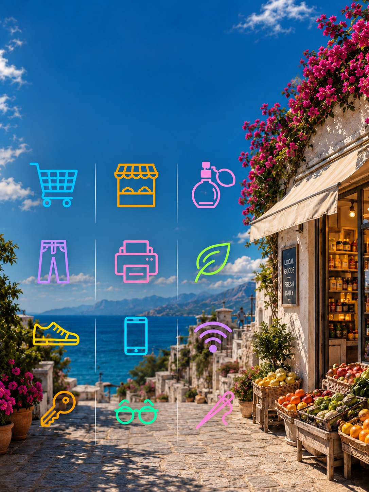

Dagelijks
Supermarkt, markt, drogist, opticien, Vodafone, telefoonreparatie (iRepair), dierenwinkel Zootopia, visspullen (Saltylife), sleutelmaker, schoenmaker, kledingreparatie en babyspullen.

Geen souvenirlijst, maar zaken die je nodig hebt als er iets stuk is of op is. Adressen zijn nog niet ingevuld.
Supermarkt, markt, drogist, opticien, Vodafone, telefoonreparatie (iRepair), dierenwinkel Zootopia, visspullen (Saltylife), sleutelmaker, schoenmaker, kledingreparatie en babyspullen.
Parfum en cosmetica: Honduros, Milva Galerie en Myrenia. Verder een print- en boekwinkel, handgemaakte sandalen (Elli), Jeans Center, Interspot en E-clik.